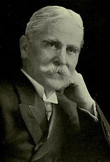

|
Henry van Dyke Jr.
|
|
 |
|
|
In
office
November 20, 1913 – January 15, 1917 |
|
President |
Woodrow Wilson |
|
Preceded
by |
Lloyd Bryce |
|
Succeeded
by |
John W. Garrett |
In
office
October 15, 1913 – January 11, 1917 |
|
President |
Woodrow Wilson |
|
Preceded
by |
Lloyd Bryce |
|
Succeeded
by |
John W. Garrett |
|
Born |
Henry Jackson van Dyke Jr.
November 10, 1852
Germantown, Pennsylvania, U.S. |
|
Died |
April 10, 1933 (aged 80)
Princeton, New Jersey, U.S. |
|
Resting place |
Princeton Cemetery |
|
Spouse(s) |
Ellen Reid |
|
Parent(s) |
Henry van Dyke Sr. |
|
Education |
Poly Prep Country Day School |
|
Alma mater |
Princeton University
Princeton Theological Seminary |
|
Occupation |
- Author
- educator
- minister
- diplomat
|
|
|
Henry Jackson van Dyke Jr. (November
10, 1852 – April 10, 1933) was an American author, educator,
diplomat, and Presbyterian clergyman.[1]
Early life[edit]
Van Dyke was born on November 10,
1852, in Germantown,
Pennsylvania. He was the son of Henry Jackson van Dyke Sr.
(1822–1891), a prominent Brooklyn Presbyterian clergyman
known in the antebellum years for his anti-abolitionist views.[2] The
family traced its roots to Jan Thomasse van Dijk, who emigrated from Holland to
North America in 1652.[2]
The younger Henry van Dyke graduated
from Poly
Prep Country Day School in 1869, Princeton
University, in 1873 and from Princeton
Theological Seminary, 1877.[3]
He served as a professor of English
literature at Princeton between 1899 and 1923.
Among the many students whom he influenced was, notably, future
celebrity travel writer Richard
Halliburton (1900–1939), Editor-in-Chief, at the
time, of the Princeton Pictorial.[4]
Van Dyke chaired the committee that
wrote the first Presbyterian printed liturgy, The
Book of Common Worship of 1906. In 1908–09 Dr. van Dyke was a
lecturer at the University
of Paris.
By appointment of President Woodrow
Wilson, a friend and former classmate of van Dyke, he became
Minister to the Netherlands and Luxembourg in
1913. Shortly after his appointment, World
War I threw Europe into dismay. Americans all
around Europe rushed to Holland as a place of refuge. Although
inexperienced as an ambassador, van Dyke conducted himself with the
skill of a trained diplomat, maintaining the rights of Americans in
Europe and organizing work for their relief. He later related his
experiences and perceptions in the book Pro Patria (1921).[5]
Van Dyke resigned as ambassador at the
beginning of December 1916 and returned to the United States. He was
subsequently elected to the American
Academy of Arts and Letters and received many other
honors.
Van Dyke was a friend of Helen
Keller. Keller wrote: "Dr. van Dyke is the kind of a friend to
have when one is up against a difficult problem. He will take
trouble, days and nights of trouble, if it is for somebody else or
for some cause he is interested in. 'I'm not an optimist,' says Dr.
van Dyke, 'there's too much evil in the world and in me. Nor am I a
pessimist; there is too much good in the world and in God. So I am
just a meliorist, believing that He wills to make the world better,
and trying to do my bit to help and wishing that it were more.'"[6]
He officiated at the funeral of Mark
Twain at the Brick
Presbyterian Church on April 23, 1910.[7]
Van Dyke died on April 10, 1933. He is
buried in Princeton
Cemetery.[8] A
biography of Van Dyke, titled Henry Van Dyke: A
Biography, was written by his son Tertius van Dyke and published
in 1935.
Literary legacy[edit]
_-_Harry_Fenn,_Market-place,_Bethlehem.jpg)
Illustration by
Harry
Fenn from
Out-of-Doors
in the Holy Land, 1908
Among his popular writings are the two
Christmas stories, "The
Other Wise Man" (1896) and "The First Christmas Tree" (1897).
Various religious themes of his work are also expressed in his
poetry, hymns and
the essays collected in Little Rivers (1895)
and Fisherman's Luck (1899). He
wrote the lyrics to the popular hymn "Joyful,
Joyful We Adore Thee" (1907), sung to the tune of Beethoven's
"Ode
to Joy". He compiled several short stories in The
Blue Flower (1902), named after the key symbol of Romanticism introduced
first by Novalis.
He also contributed a chapter to the collaborative
novel, The
Whole Family (1908).
One of van Dyke's best-known poems is
titled "Time Is" (Music and Other Poems, 1904), also known as
"For Katrina's Sundial" because it was composed to be an inscription
on a sundial in the garden of an estate owned by his friends Spencer
and Katrina Trask. The second section of the poem, which was
read at the funeral
of Diana, Princess of Wales,[9] reads
as follows:
Time is
Too slow for those who Wait,
Too swift for those who Fear,
Too long for those who Grieve,
Too short for those who Rejoice,
But for those who Love,
Time is not.
(This is the original poem; some
versions have "Eternity" in place of "not.")
The poem inspired the song "Time Is"
by the group It's
a Beautiful Day on their eponymous 1969 debut
album. Another interpretation of the poem is a song entitled "Time"
by Mark
Masri (2009).[10]
In 2003, the same section of the poem
was chosen for a memorial in Grosvenor
Square, London, dedicated to British victims of the September
11, 2001 terrorist attacks.[11] The
poem is also used as the closing of the 2013 novel Child
of Time, by Bob Johnson.
List of works


_-_Harry_Fenn,_Market-place,_Bethlehem.jpg)


{kind=link}